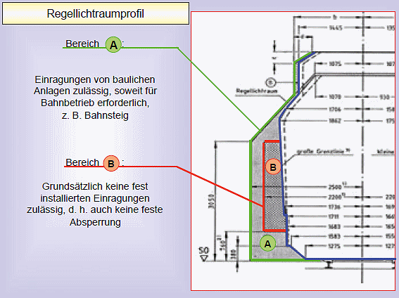

Bereich A: Zulässig sind Einragungen von baulichen Anlagen, wenn es der Bahnbetrieb erfordert (z. B. Bahnsteige, Rampen, Rangiereinrichtungen, Signalanlagen), sowie Einragungen bei Bauarbeiten, wenn die erforderlichen Sicherheitsmaßnahmen getroffen sind.
Bereich B: Zulässig sind Einragungen bei Bauarbeiten, wenn die erforderlichen Sicherheitsmaßnahmen getroffen sind.